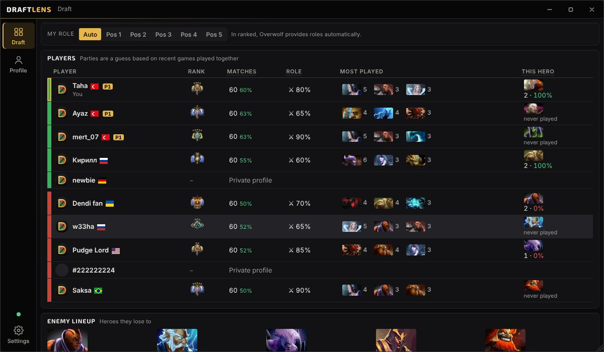
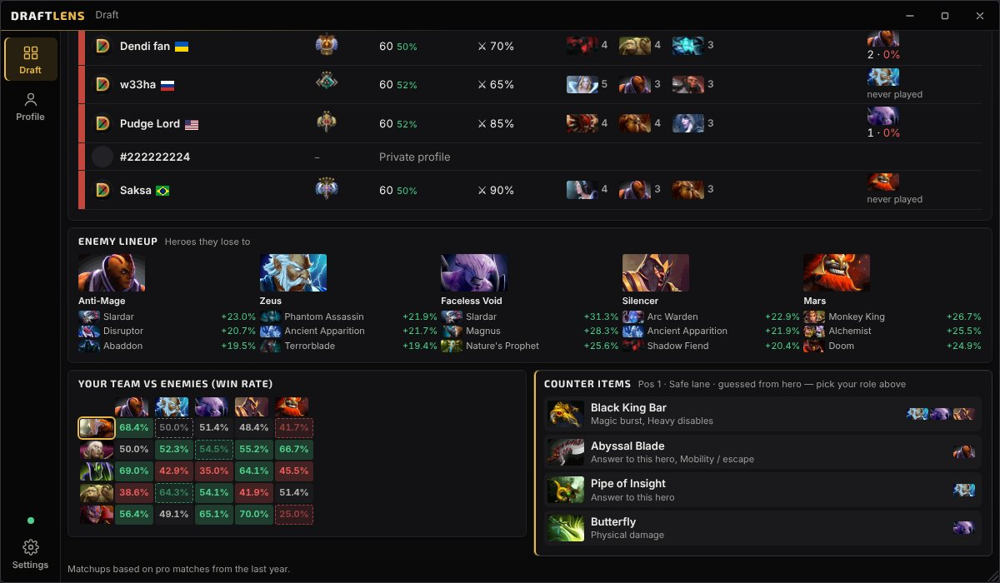
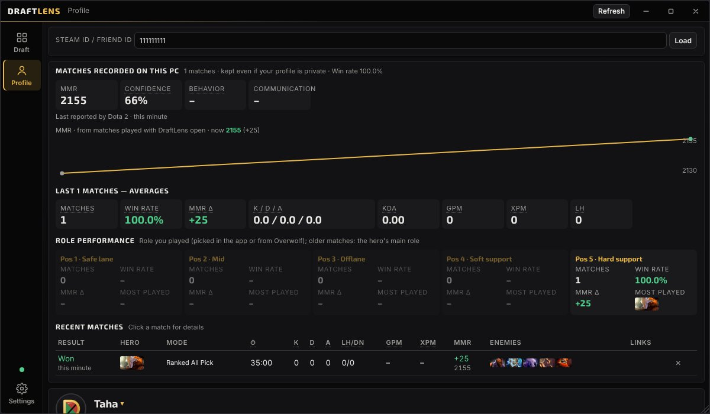
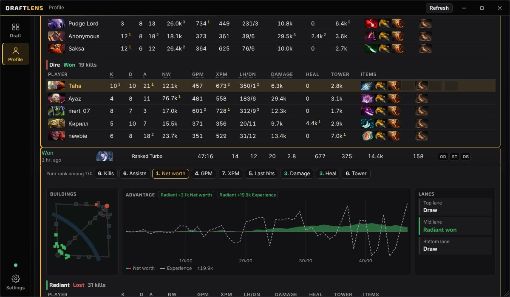
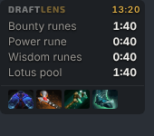

A free, lightweight Dota 2 companion app for Overwolf (Windows). English · Türkçe · Русский · Español · Português · Deutsch · Français · Polski · Українська · 简体中文
DraftLens is a minimal alternative to Dota Plus. Draft analysis lives in a separate desktop window you open with Alt+Tab. On top of the game there is only a small, transparent overlay, and you can turn it off completely. There are never ads in the game or on the overlay.
Features
Draft
Player cards for all 10 players: rank, matches and win rate, core/support split, most played heroes, experience on the picked hero
Your own party marked from the game; other parties guessed from recent games together
Heroes that beat each enemy, filtered by position
Team vs team win rate matrix, with an "if picked" preview row
Pick ideas for teammates who haven't picked yet
Counter items for your role, including hero-specific answers
In game
Rune timers (bounty, power, wisdom, lotus)
Counter items in a small overlay
Ctrl+Shift+D show/hide, Ctrl+Shift+M move
Settings switch to keep the overlay off in every match
Profile
Match history with positions, KDA, GPM/XPM and links
Match details: all 10 players ranked by each stat, buildings, net worth graph, lane results
Matches recorded on this PC: MMR change per match, MMR and confidence, role performance. Works even with a private profile
Screenshots

Player cards during the draft

Counters, win rate matrix and counter items

Matches recorded on this PC

Match details

In-game overlay
Screenshots use sample data.
Data
Player cards, match history and match details come from the public OpenDota API. Matchups are based on the last year of pro matches and adjusted with overall hero win rates. Responses are cached on your PC to keep requests low. DraftLens needs no API key and no account.
Status
Version 1.0 has been submitted to the Overwolf store and is under review. Updates will follow with fixes and new features.